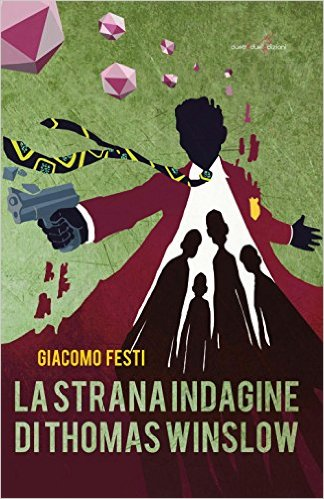

1) A quale genere appartiene “La strana indagine di Thomas Winslow”?
Mi definisco un lettore “onnivoro” - e anche un po' obeso. Amo leggere di tutto, senza distinzioni di sorta, perché ogni storia ha qualcosa da offrire. Più che il genere di appartenenza guardo ciò che l’autore ha voluto comunicarmi, perché ogni racconto ha qualcosa da dire in una particolare maniera, farsi condizionare da questo non porta a nulla.
Penso quindi che tutto ciò si rifletta nel mio libro. Non l’ho scritto pensando di voler accontentare un determinato tipo di lettore, ma perché volevo esprimere un dato concetto. Ma sono certo che la mia natura onnivora abbia contribuito allo schizofrenico risultato finale. Forse la definizione che si avvicina di più è FantaNoir. Ma ormai i generi sono come la musica metal, ne esce sempre una versione nuova.
2) Come nasce l’idea?
L'idea non nasce da qualcosa in particolare. Di solito mi sveglio e, a seconda del periodo che sto passando, ho in mente una nuova storia. Detto senza tanta finta modestia, la capacità di inventare una storia o ce l’hai o non ce l’hai, è qualcosa che viene spontaneamente e non lo puoi sforzare – certo, leggere e scrivere sempre però può essere un buon allenamento da non sottovalutare. A ognuno il suo, io per esempio sono negato per la musica.
La cosa più interessante è stata sviluppare l'indagine che fa da sfondo alla storia, decidere come doveva concludersi il caso e rendere credibili tutti gli intrecci. Ma soprattutto, far procedere due storie diverse contemporaneamente, senza perdere il controllo di nessuna. Sì, in quel periodo il caffè è stato il mio miglior amico...
3) Thomas è costruito un po' sulla tua identità? Ti assomiglia in qualche modo?
Mi sento in gran parte diverso da Thomas. Non possiedo il suo coraggio e non riuscirei a fare a pugni con qualcuno, al massimo posso scappare da una situazione molto complicata – come fa lui, ma con molto meno stile. Quello che mi accomuna al nostro detective è la fortuna/sfortuna di essere un essere umano. Ho voluto creare Thomas proprio pensando alla nostra specie, in particolare alle nostre paure quotidiane che ci attanagliano in ogni momento
Io credo infatti che siano due cose ad accomunarci tutti: la morte e la paura. La paura però ha molte più variabili. C’è una grande paura che ci portiamo dietro dalla nascita, alla quale non sappiamo dare nome. Così inventiamo molte “micro-paure” (quella di non piacere, di deludere, di non farcela), più piccole e definibili, perché una cosa che puoi chiamare per nome è molto più rassicurante. Ecco, Thomas fondamentalmente è un uomo che fugge dall’ignoto.
4) Pensi che sia più facile amare o odiare Thomas?
La cosa è molto soggettiva. Probabilmente, amare Thomas non può essere troppo difficile perché è carico di domande, proprio come ognuno di noi. È facile rispecchiarsi in lui. Eva Ridley (la femme fatale), invece, è il personaggio ambiguo per eccellenza: piena di risposte, proprio come coloro che hanno rovinato il Mondo durante il tempo.
5) So che tieni particolarmente a questo libro: qual è il motivo?
Sono molto critico nei confronti di me stesso, è improbabile che io sia soddisfatto del mio lavoro e questo, per me, è una spinta a migliorare sempre. Con “La strana indagine di Thomas Winslow” è stato diverso. Una volta terminato, per la prima volta mi sono sentito davvero soddisfatto di me stesso e questo mi ha, in parte, destabilizzato.
Ma sono certo che sia questione di tempo. Prima o poi ritornerò insoddisfatto e cercherò di superarmi ulteriormente. La soddisfazione per me è come la striscia d’acqua che un disperso nel deserto vede all’orizzonte...
6) Hai mai letto o ti sei mai interessato ai thriller nordici?
Non particolarmente. Ho letto solo “Lasciami entrare” di John Ajvide Lindqvist e ho visto i film della saga “Millennium”, se può valere. Ma preferisco Noomi Rapace a Rooney Mara.
7) Hai detto che ami scoprire sempre nuovi generi. C'è però un autore che preferisci sopra gli altri?
Si, sono sicuro che nel tempo la mia lista di autori preferiti si allungherà, proprio perché sono sempre pronto a scoprirne di nuovi. Per ora ne cito tre: Franz Kafka, Stephen King e Philip K. Dick.
8) Ultimo libro letto che ti ha colpito particolarmente?
“Le particelle elementari” di Michel Houellebecq. Mi è piaciuto molto lo stile dell’autore, che prima conoscevo solo di fama (oltre che per quel cognome impronunciabile...), e come ha distrutto ogni convenzione della nostra società in quelle pagine così sofferte. Non una disfatta fine a se stessa, ma qualcosa che porta a un ragionamento molto più alto e complesso.
9) Novità per quanto riguarda il nuovo anno?
“La strana indagine di Thomas Winslow” uscirà finalmente in versione digitale, con nuovi contenuti che, spero, possano renderlo ancora più accattivante.
Pubblicherò inoltre il primo volume di quella che spero diventi una saga comica, della quale però posso dire ancora pochissimo. Mi sono divertito molto a scriverlo, spero però di non aver esagerato col mio black humour – mi dicono che so essere un po’ pesante, a volte.
Ho anche terminato il libro che definisco “maledetto”, che mi ha causato una disgrazia ogni volta che ho preso a scriverlo. Sono alla fase “correzione”, ma spero che una sua eventuale pubblicazione non porti all’apocalisse. Dopo tutto quello che si è portato dietro non mi fido molto...
Giacomo Festi
Intervista a cura di Sara Fenili
Di Giacomo Festi:
 IL LIBRO - Thomas Winslow è un uomo in fuga. Ma non fugge come una persona normale, egli segue il suo metodo. Scappa di storia in storia, spostandosi di storia in storia quando avviene il climax del racconto e attraversando tutti i generi narrativi. Non sa perché fugge, sa solo che deve scappare. La fuga gli ha annebbiato il cervello ma gli ha lasciato quella basilare informazione. Finché un giorno viene catturato dagli uomini grigi che lo portano dal loro capo, tal Ghilligan, il quale gli rivela che lui altro non è che un personaggio di una storia, dalla quale è fuggito, che giace in stallo in attesa del suo reinserimento. Così viene riportato all'interno della sua storia originale, nella quale è un detective degli anni trenta che deve investigare su un misterioso omicidio...